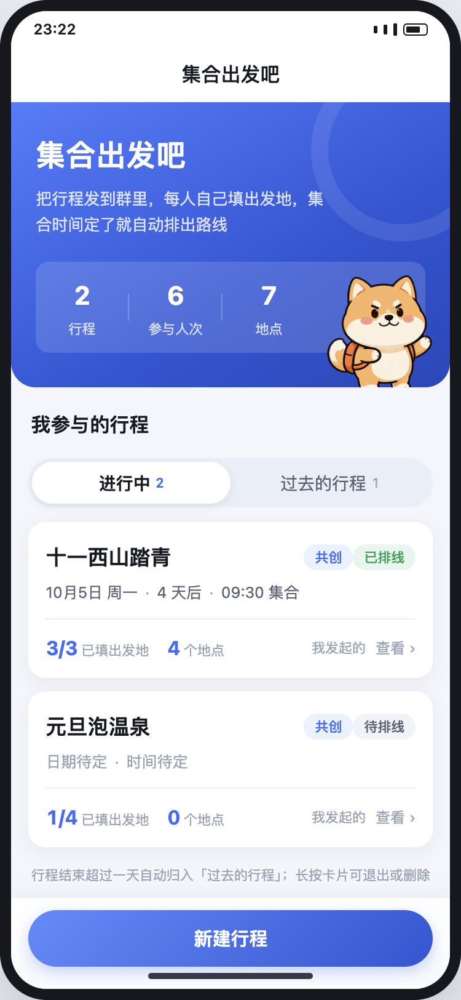
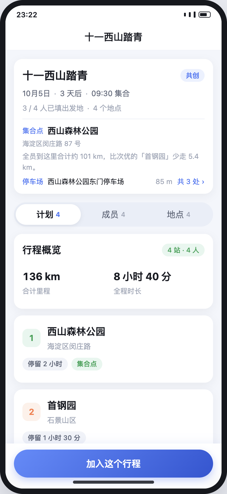
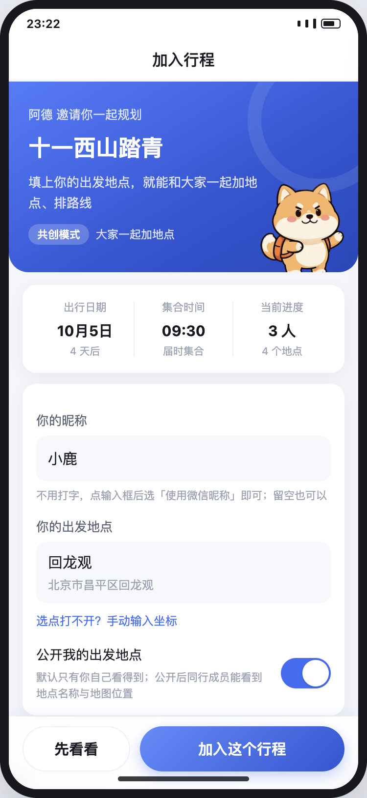
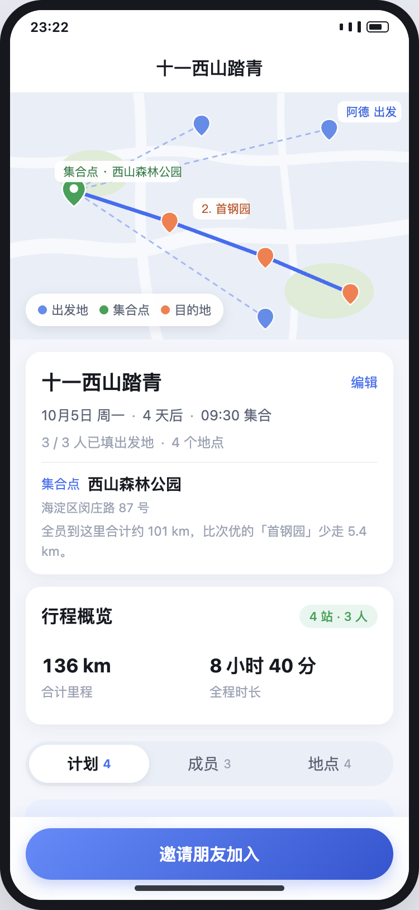
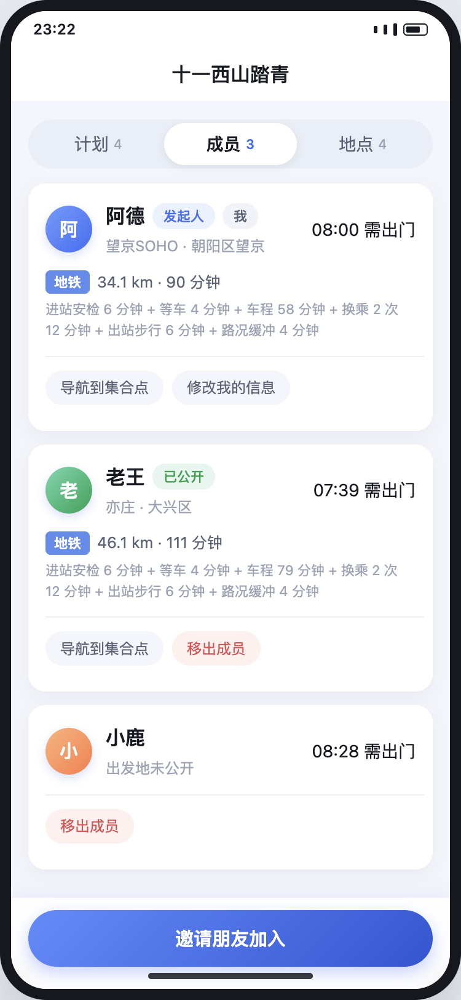
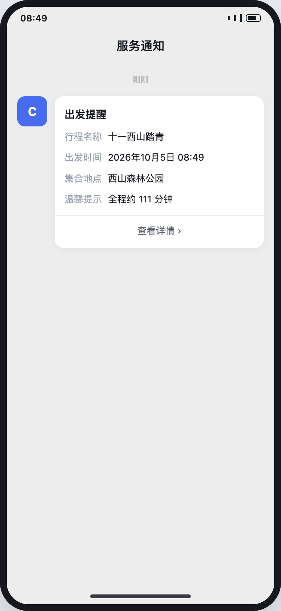
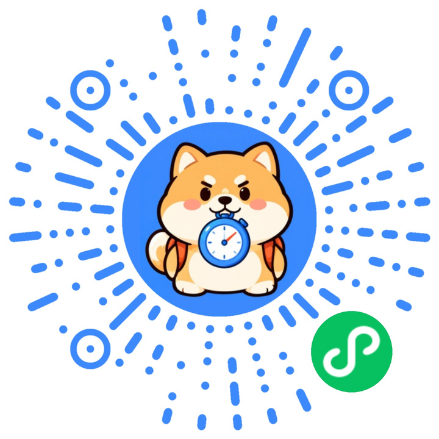

一次出门，半个晚上都在群里对齐
组织者不想当调度员，可只要没人收齐出发地、算清时间，这件事最后总会落到一个人头上。
接龙越刷越长，还是拼不出地图
谁从哪走、谁能顺路、谁坐地铁，消息一条条刷过去，最后还是得自己打开地图，一个个点开看。
集合点靠拍脑袋，总有人多绕路
定在谁家附近都像偏心；换一个地方，也没人说得清到底差多少。最后往往是住得远的人默默多走一截。
集合时间说了八遍，还是有人迟到
住得远的人按同一个时间出门，路上堵不堵、换几次乘，全靠自己估。出门前再问一遍，已经来不及了。
集合出发吧把这几件事接了过去：收出发地、挑集合点、排路线、算时间，一次做完。
从群里一句「去不去」，到一张出发时间表
建行程只要几十秒；剩下的活，它会跟着每个人填的出发地自己算。
建个行程
起个名字，选共创还是参与，行程就建好了。日期和集合时间可以之后再定。
发到微信群
分享卡片点开就是行程：集合点、地点、人数，加入之前先看明白。
各自填出发地
每个人只填自己的。不公开也没关系，一样能算进路线和集合点。
自动排线
集合点、地点顺序、每一段路、每个人的出门时间，一起算好。
到点提醒
按你自己的出门时间，微信推一条服务通知，不用别人在群里催。
该算的它都算好，该知道的你都看得到
集合点为什么选在这儿、每段路要多久、你该几点出门——不是一句「大概」，而是摆在明面上的数。
集合点算出来，不是拍出来
把所有人的出发地放在一起比，挑一个总里程和总时长更合适的地方，还会把附近的停车场一起给你。为什么是这儿，页面上写得明明白白。
一张时间表，所有人看同一份
几点出门、几点到集合点、每一站待多久、下一段怎么走，全在一条时间线上。谁看手机，看到的都是同一版。
每个人都有自己的出门时间
住得远的早一点走，离得近的不用陪着等。地铁、公交、骑行、步行、打车、自驾，各自按真实耗时算，换乘和进出站也留了出来。
谁改了出发地，整张表跟着重排
有人换了地方、加了地点，或者把集合时间提前了，路线和时间表自动更新。组织者不用拿计算器再算一遍。
共创还是参与，开团时选
共创：谁都能补地点，各改各的信息；参与：发起人一个人安排。两种方式，加入、填出发地和收提醒都一样顺。
到点微信提醒，不用人催
点一下订阅，到了你自己的出门时间，微信推一条服务通知：几点出发、去哪儿集合、全程大约多久。
打开小程序，你会看到的
从建好行程、看清、加入，到排好线、出发前那条提醒——六个真实画面。






一起商量，还是你一个人定了都行
加入、填出发地、收提醒，两种方式完全一样；区别只在谁能改行程。
共创
谁都能往行程里加地点，每个人可以改自己的出发地和信息。想去哪儿，群里说着说着就齐了。
- 所有人都能加地点
- 每个人改自己的信息
- 发起人负责定集合时间
参与
发起人一个人安排地点和顺序，其他人只填自己的出发地。少一点来回，多一点确定。
- 只有发起人能改行程
- 其他人只填出发地
- 加入和提醒照旧
发到群里，也只公开该公开的
分享卡片是行程的门票，不是所有人信息的入口。
出发地默认是你自己的
别人只看到你填没填、几点出门，看不到你从哪儿出发、坐什么车。想公开再公开。
没加入的人，看不到成员信息
点开卡片可以先看行程再决定；加入之后，也只看得到大家愿意公开的那部分。
行程结束 24 小时后收起
过期行程自动归档，不会一直占着列表，也不会有人随时翻到老地址。
不用下载，扫一下就出发
打开微信扫一扫，进「集合出发吧」。建个行程丢进群里，第一次用也不用另外注册账号。
- 1扫小程序码，直接进小程序
- 2建行程，分享到微信群
- 3大家填完出发地，时间表就出来了

微信扫一扫
扫码或长按识别 · 不用下载 App
你可能想问
要下载 App 吗？
不用。它是微信小程序，扫小程序码就能打开，用完退出，不占手机桌面。
还要另外注册账号吗？
不用另外注册。用微信昵称加入行程就行，打开就是能用的状态。
别人能看到我从哪儿出发吗？
默认看不到。大家只会看到你填了没有、几点出门；出发地和交通信息要不要公开，由你自己决定。
一个行程能有多少人？
最多 30 人。两个人的周末和一群人的团建，都放得下。
共创和参与有什么区别？
共创模式下，所有成员都能加地点、改自己的信息；参与模式下，只有发起人安排行程。加入、填出发地、收提醒，两种模式都一样。
出发提醒是怎么来的？
加入时点一下允许订阅，到了你自己该出门的时间，微信会推一条服务通知：几点出发、去哪儿集合、全程大约多久。
组织者还要自己算路线吗？
不用。任何一个人改了出发地或行程，集合点、地点顺序和时间表都会自动重算。
行程结束之后还在吗？
结束后保留 24 小时，之后自动收起，不会一直占着列表。